Sandwicherie · Bruxelles
SignéCricotte
Une vitrine de garnitures fraîches, des salades maison qui changent sans cesse et des sandwichs tellement remplis que le pain se referme mal. À deux pas de la Grand-Place, du lundi au vendredi dès 7 h 30.
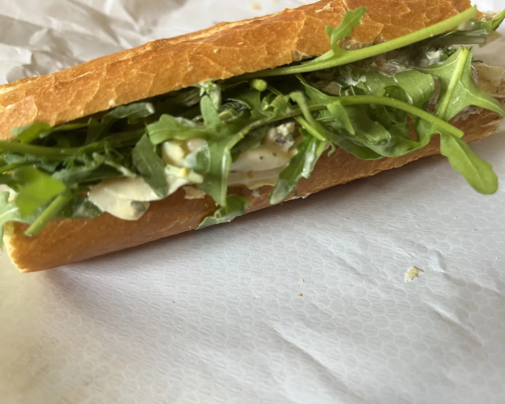
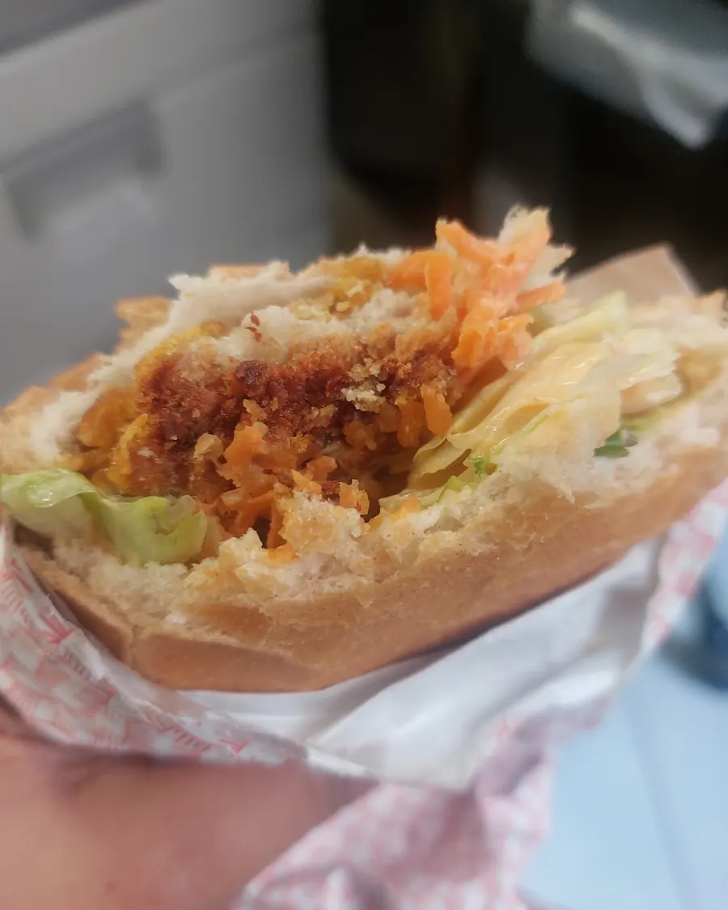
La maison
« Le pain se referme mal tant il est rempli, comme une oie d'élevage avant Noël. »
Paulo, client, sur Google
Chez Cricotte, tout se joue au comptoir : une longue vitrine réfrigérée où s'alignent les garnitures, et une carte écrite à la main au tableau noir. On choisit sa garniture, ses crudités, et même son pain : gris, à l'ancienne ou bagnat pour 50 centimes de plus.
La maison l'écrit en tête de sa carte : produits frais et de qualité, fait maison. La boulette et le potage sortent de la cuisine, et de nouvelles salades à tartiner arrivent sans cesse. Pour manger sur place, quelques petites tables côté vitrine.
Signé Cricotte
Sandwicherie · Bruxelles 1000
Merci de votre visite · à demain !
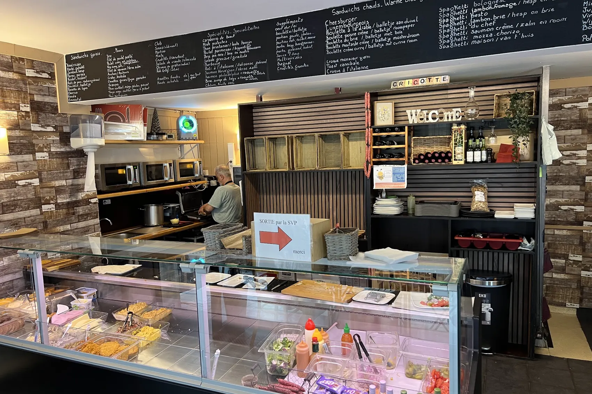
Le comptoir et son tableau noir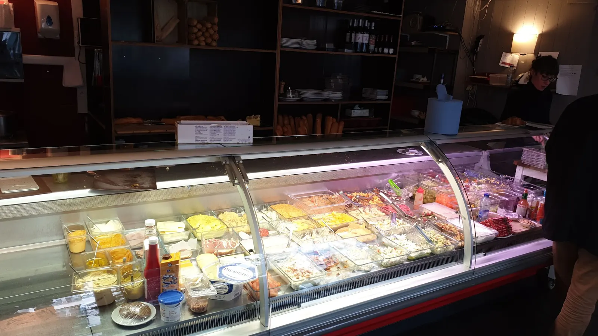
La vitrine des garnitures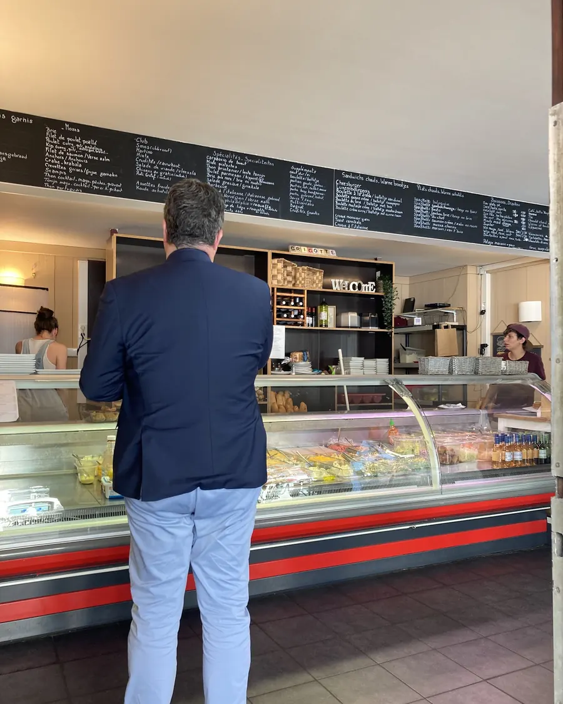
On commande au comptoirIls en parlent
« Un trésor de simplicité gourmande »
Ce que les clients écrivent sur Google après leur sandwich de midi rue du Midi.
La carte
Vingt-six sandwichs froids, sept chauds, et des salades qui changent
Un extrait de la carte affichée en vitrine. Pain gris, à l'ancienne ou bagnat pour 0,50 € de plus.
Sandwichs froids
- Américain4,00 €
- Boulette4,00 €
- Rosette de Lyon4,00 €
- Jambon de Parme4,50 €
- Rosbeef4,00 €
- Chorizo4,00 €
- Filet de poulet pané4,50 €
- Poulet andalouse4,00 €
- Filet de saumon6,00 €
- Crevettes grises6,00 €
- Scampis5,00 €
- Club italien6,00 €
- Martino5,00 €
- Smos5,00 €
Et aussi : haché, jambon, gouda, mozzarella, brie, poulet pili, poulet estragon, thon cocktail, mayonnaise ou piquant, club et crudités, de 3,50 € à 4,80 €.
Sandwichs chauds
- Boulette à la diable5,50 €
- Cheese burger5,50 €
- Cheese poulet6,50 €
- Luxembourgeois5,50 €
- Falafel6,00 €
- Croque-monsieur7,50 €
- Croque à l'italienne8,50 €
Plats chauds
- Spaghettis bolognaise10,00 €
- Spaghettis jambon fromage10,00 €
- Spaghettis 4 fromages12,50 €
- Spaghettis saumon15,00 €
Spécialités
- Salade du jour5,00 €
- Carpaccio de bœuf5,00 €
- Mixte pistaches5,00 €
- Thon à l'italienne5,00 €
- Poulet parmesan basilic5,00 €
- Poulet guacamole5,00 €
- Brie aux noix5,00 €
- Saumon norvégien5,00 €
- Salade grecque5,00 €
- Tartare de bœuf à l'italienne5,00 €
- Brie, sirop de Liège, roquette5,00 €
- Saumon Philadelphia roquette7,00 €
« Nous créons en permanence de nouvelles salades »
Assiettes froides
- Assiette de crudités7,50 €
- Viande au choix12,50 €
- Thon et crudités12,50 €
- Crabe et crudités12,50 €
- Mozza / féta12,50 €
- Saumon et crudités15,00 €
- Crevettes crudités15,00 €
- Salade spéciale15,00 €
Suppléments
- Crudités, 1 sorte0,50 €
- Plusieurs crudités1,00 €
- Pain gris, à l'ancienne, bagnat0,50 €
- Rosbeef, parme, mozza, féta1,50 €
- Gouda, jambon1,00 €
- Œuf dur0,50 €
- Boulette maison3,00 €
- Potage maison + pain4,00 €
Prix de la carte affichée en vitrine (édition de décembre 2023), recopiés tels quels : ils peuvent avoir bougé depuis. Sur le vrai site, la carte du jour s'affiche ici.
Ce qui sort du comptoir, vu par les clients
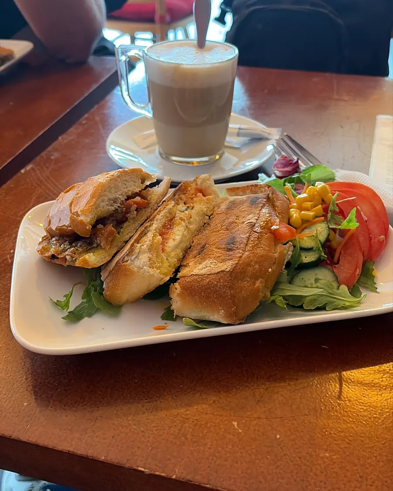
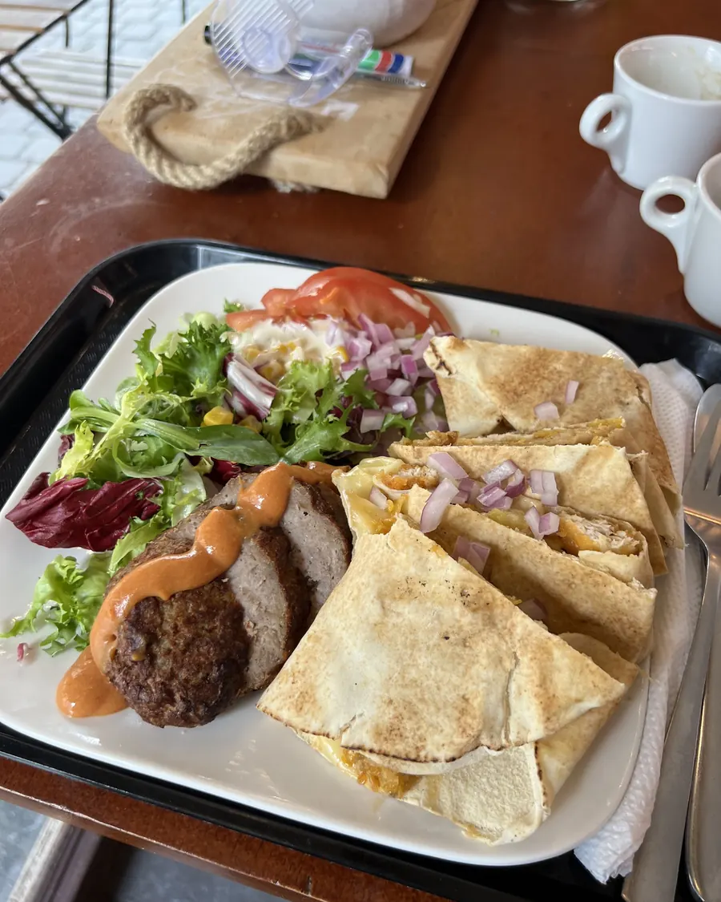
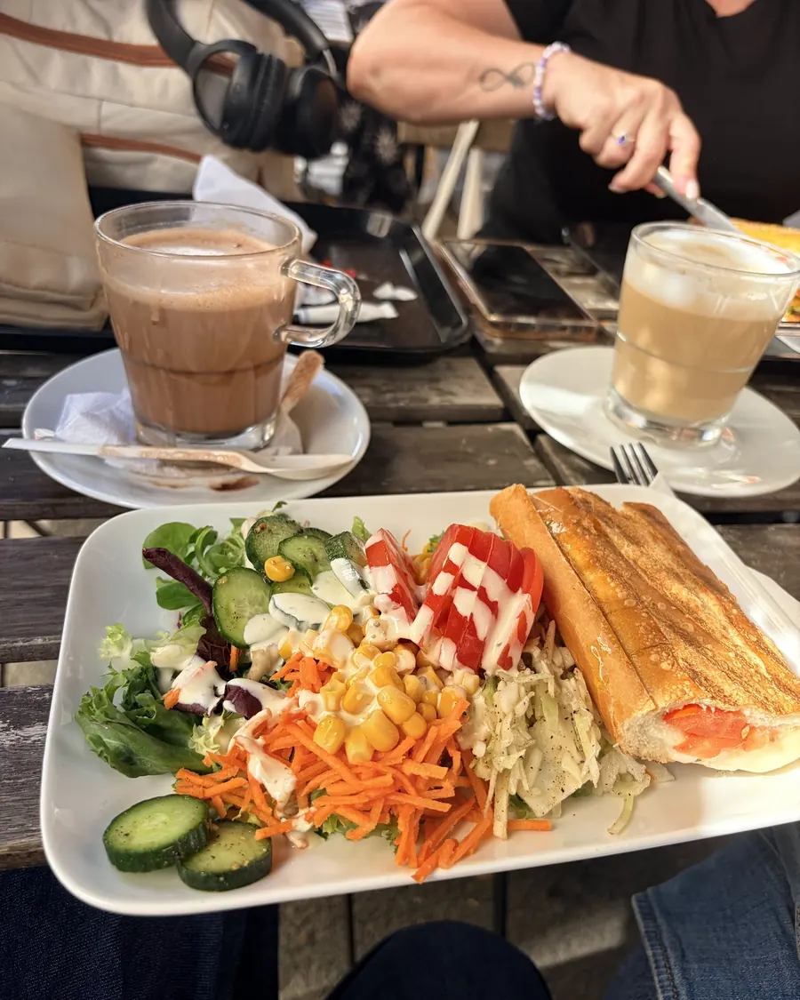
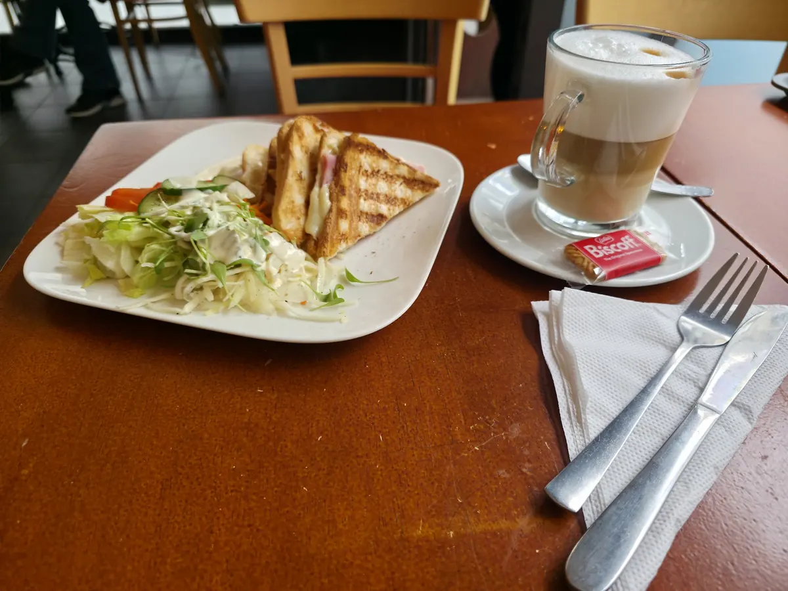
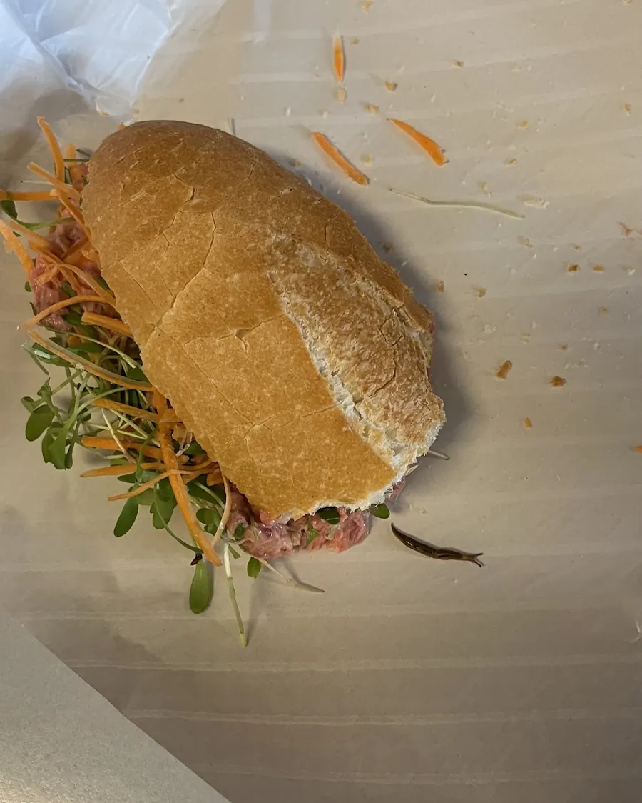
À emporter
À midi, la file déborde sur le trottoir. Votre sandwich vous attend.
Choisissez votre sandwich, le jour et l'heure de retrait, du lundi au vendredi entre 7 h 45 et 15 h 30. Vous passez, vous payez, vous repartez.
Horaires & accès
Du petit matin à l'heure du goûter
Du lundi au vendredi, de 7 h 30 à 16 h
| Lundi | 7 h 30 – 16 h |
| Mardi | 7 h 30 – 16 h |
| Mercredi | 7 h 30 – 16 h |
| Jeudi | 7 h 30 – 16 h |
| Vendredi | 7 h 30 – 16 h |
| Samedi | Fermé |
| Dimanche | Fermé |
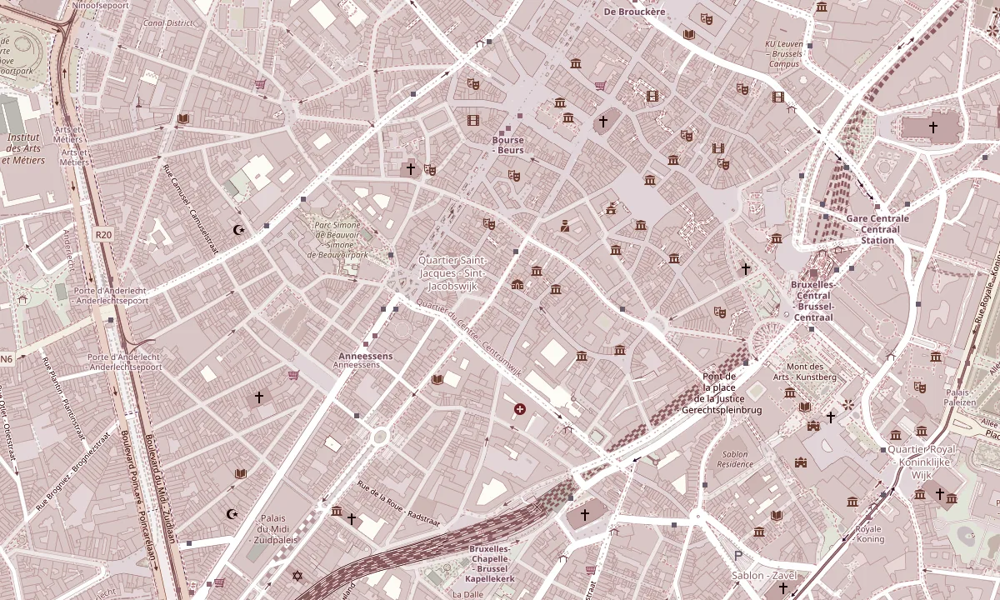